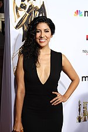

Résumé
La vie au sein du commissariat de police de Brooklyn n'est pas de tout repos : une pléiade d'inspecteurs un poil loufoque doivent jongler entre leur mission de protéger et servir les habitants de la ville, leur vie personnelle et celle du bureau.
Distribution
Acteurs principaux
Andy Samberg
Melissa Fumero
Andre Braugher
Joe Lo Truglio
Stephanie Beatriz
Chelsea Peretti
Terry Crews
À propos
Brooklyn Nine-Nine est une série télévisée américaine créée par Dan Goor et Michael Schur, diffusée entre le 17 septembre 20131 et le 20 mai 2018 sur le réseau Fox et entre le 10 janvier 2019 et le 16 septembre 2021 sur le réseau NBC. Au Canada, elle est diffusée en simultané sur Citytv2. En France, la série est diffusée depuis le 1er octobre 2013 sur Canal+ Séries3, depuis le 25 avril 2014 sur cette même chaîne4 et depuis le 12 juin 2015 sur France 45 sur France Ô depuis le 15 mai 2017, et sur Comedy Central depuis le 5 septembre 2022. Elle est aussi disponible sur Netflix. En Suisse, elle est diffusée depuis le 15 février 2015 sur RTS Un6. Au Québec, elle est exclusivement disponible sur Netflix. Elle est également disponible en Belgique en version française sur Netflix7. Néanmoins, en version française, elle reste inédite dans les autres pays francophones. Pour sa première saison, la série remporte en 2014 le Golden Globe de la meilleure série télévisée musicale ou comique à la surprise de certains commentateurs8. À l'automne 2020, une adaptation québécoise de la série tournée à Québec, réalisée par Patrick Huard pour ComediHa! et diffusée sur la plateforme Club Illico9, est mise en ligne.
Saisons
Saison 1
Jake Peralta et Amy Santiago mènent l'enquête sur des vols de matériaux technologiques dans un magasin. Grâce à une caméra de surveillance placée dans un ours en peluche, ils identifient les voleurs et les appréhendent. À la brigade de police du 99e, dans le quartier de Brooklyn à New York, l'équipe accueille un nouveau capitaine : Ray Holt, qui arrive en provenance des affaires publiques. Gina Linetti, la secrétaire du groupe, découvre qu'il est homosexuel et Terry Jeffords, le chef-adjoint, le débriefe sur son équipe de travail. Après cela, Jake, Amy, Charles Boyle et Rosa Diaz enquêtent sur le meurtre d'Henry Morgenthau, un homme riche. Plus tard, Jake et Charles se rendent chez Beneficio's et soupçonnent Radco, un boucher. En jouant la scène du meurtre, ils réussissent à provoquer la fuite de l'homme, tout en le laissant s'échapper. À cause de cette erreur, Peralta est contraint de travailler aux archives de la brigade, mais le capitaine, Santiago et lui, ainsi que Boyle et Diaz, reprennent la poursuite de Radco. Ils réussissent à l'encercler dans un entrepôt et à l'appréhender.

Saison 2
Après six mois de couverture, Jake parvient à organiser une opération permettant l'arrestation de plusieurs chefs mafieux de New York. Il reprend son poste au quatre-vingt dix-neuvième quand il apprend qu'un des truands s'est enfui. Le capitaine Holt force Jeffords, Santiago et Diaz à faire de simulations de dépôts de plaintes.